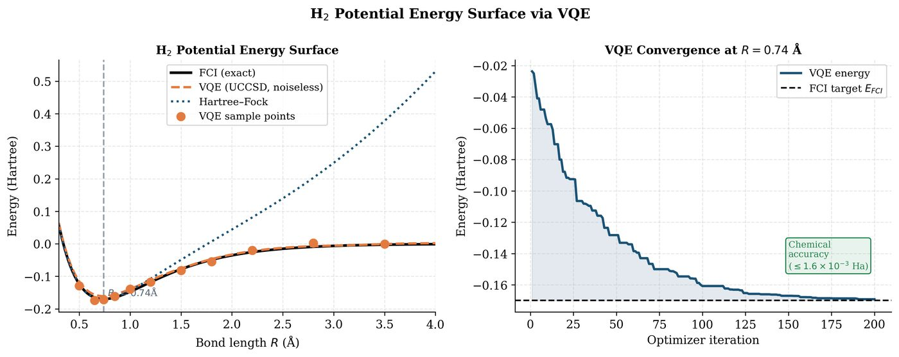

Chapter 19: QML for Quantum Chemistry and Molecular Simulation¶
Quantum chemistry is the most mature application domain for quantum computing. The electronic structure problem — finding ground-state energies of molecules — is QMA-hard classically but solvable efficiently on a quantum computer. This chapter covers the second-quantized Hamiltonian, VQE for molecular energy surfaces, quantum machine learning potentials (QMLPs), and property prediction for drug discovery.
Learning Objectives
By the end of this chapter, you will be able to:
-
Construct a second-quantized molecular Hamiltonian using the Jordan-Wigner transform
-
Implement VQE with UCCSD ansatz for H\(_2\) and LiH
-
Train a QML model to predict molecular potential energy surfaces
-
Apply quantum kernels to molecular fingerprint classification
-
Discuss the quantum advantage landscape for molecular simulation
19.1 The Electronic Structure Problem¶
The electronic Schrödinger equation for a molecule with \(N_e\) electrons and \(N_n\) nuclei (in atomic units):
(Born-Oppenheimer approximation: nuclei fixed at \(\mathbf{R}_A\).)
Complexity: Classical methods:
-
Hartree-Fock: \(O(N_e^4)\) – mean-field, no correlation
-
MP2: \(O(N_e^5)\) – perturbative correlation
-
CCSD(T): \(O(N_e^7)\) – “gold standard,” limited to \(\sim50\) electrons
-
Full CI: \(O(\exp(N_e))\) – exact, intractable
A quantum computer with \(O(N_e)\) qubits can simulate the Hamiltonian efficiently via phase estimation or VQE.
19.2 Second Quantization and Qubit Mappings¶
In second quantization, the molecular Hamiltonian is:
where \(\hat{a}_p^\dagger\), \(\hat{a}_p\) are fermionic creation/annihilation operators, \(h_{pq}\) are one-electron integrals, and \(g_{pqrs}\) are two-electron integrals.
19.2.1 Jordan-Wigner Transform¶
Maps fermionic operators to Pauli operators:
Result: The molecular Hamiltonian becomes a sum of Pauli strings:
where \(P_\alpha\in\{I,X,Y,Z\}^{\otimes n}\) are \(n\)-qubit Pauli strings.
Solved Example 19.1
Problem: Write the Jordan-Wigner form of the number operator \(\hat{n}_0 = \hat{a}_0^\dagger\hat{a}_0\) for orbital \(p=0\).
Solution: \(\hat{n}_0 = \hat{a}_0^\dagger\hat{a}_0 = \frac{X_0-iY_0}{2}\cdot\frac{X_0+iY_0}{2} = \frac{X_0^2 + iX_0Y_0 - iY_0X_0 + Y_0^2}{4}\).
Using \(X^2=Y^2=I\) and \(XY=-YX=iZ\): \(= \frac{2I + 2Z}{4} = \frac{I+Z}{2} = |0\rangle\langle0|\).
This makes sense: \(\hat{n}_0\) measures whether orbital 0 is occupied (\(|0\rangle\) in JW convention means unoccupied, \(|1\rangle\) means occupied). Wait — JW convention: \(|0\rangle\) = unoccupied, \(|1\rangle\) = occupied. So \(\hat{n}_0 = \frac{I-Z}{2} = |1\rangle\langle1|\). ✓
19.3 VQE for Molecular Ground States¶
19.3.1 UCCSD Ansatz¶
The Unitary Coupled Cluster Singles and Doubles (UCCSD) ansatz:
where \(T = T_1 + T_2\) are the single and double excitation operators:
Here \(i,j\) are occupied and \(a,b\) are virtual orbitals. The UCCSD ansatz is chemically motivated and hardware-implementable as a sequence of Givens rotations.
19.4 Quantum ML Potentials¶

Quantum Machine Learning Potentials (QMLPs) learn molecular potential energy surfaces (PES) from quantum-computed reference data.
Architecture:
-
Descriptor: Convert molecular geometry \(\{Z_i, \mathbf{r}_i\}\) to a rotationally/translationally invariant feature vector (e.g. Coulomb matrix, ACSF, SOAP descriptors)
-
QML model: QNN or quantum kernel trained on descriptor \(\to\) energy
-
Prediction: Predict energy \(E(\mathbf{r})\) and forces \(\mathbf{F}_i = -\nabla_{\mathbf{r}_i}E\)
Coulomb matrix descriptor for \(N\) atoms:
19.5 Quantum Kernels for Molecular Property Prediction¶
Molecular fingerprints (Morgan fingerprints, MACCS keys) can be used as inputs to quantum kernel methods for drug property prediction:
where \(|\phi(m)\rangle = U_\phi(\text{fingerprint}(m))|0\rangle^n\).
Applications:
-
ADMET prediction: absorption, distribution, metabolism, excretion, toxicity
-
Binding affinity: protein-ligand docking score prediction
-
Solubility: aqueous solubility from molecular structure
19.6 Implementation: VQE for H₂ and Molecular ML¶
import pennylane as qml
from pennylane import qchem
import numpy as np
import torch
import matplotlib.pyplot as plt
# -- Part 1: VQE for H2 at equilibrium geometry ---------------
symbols = ["H", "H"]
d_eq = 1.4 # Angstrom (equilibrium bond length)
def h2_hamiltonian(bond_length):
"""Build H2 Hamiltonian at given bond length."""
geometry = np.array([[0.0, 0.0, -bond_length/2],
[0.0, 0.0, bond_length/2]])
H, n_qubits = qchem.molecular_hamiltonian(
symbols, geometry,
basis="sto-3g",
method="rhf"
)
return H, n_qubits
H_eq, n_q = h2_hamiltonian(d_eq)
print(f"H2 Hamiltonian: {n_q} qubits, {len(H_eq.ops)} Pauli terms")
dev = qml.device("default.qubit", wires=n_q)
@qml.qnode(dev, diff_method="parameter-shift")
def vqe_circuit(params):
"""UCCSD-inspired ansatz for H2."""
# Hartree-Fock reference state: |1100> (2 electrons in 4 spin-orbitals)
qml.BasisState(np.array([1, 1, 0, 0]), wires=range(n_q))
# Single excitation: orbital 0->2, 1->3
qml.SingleExcitation(params[0], wires=[0, 2])
qml.SingleExcitation(params[1], wires=[1, 3])
# Double excitation: 01->23
qml.DoubleExcitation(params[2], wires=[0, 1, 2, 3])
return qml.expval(H_eq)
# Optimize
params = np.array([0.1, 0.1, 0.1], requires_grad=True)
opt = qml.GradientDescentOptimizer(stepsize=0.4)
energies = []
for step in range(150):
params, energy = opt.step_and_cost(vqe_circuit, params)
energies.append(energy)
if (step + 1)
print(f"Step {step+1:3d}: E = {energy:.6f} Ha")
print(f"\nVQE ground state energy: {energies[-1]:.6f} Ha")
print(f"FCI reference: -1.136189 Ha")
# -- Part 2: PES scan -----------------------------------------
bond_lengths = np.linspace(0.5, 4.0, 20)
pes_vqe = []
pes_hf = []
for d in bond_lengths:
H_d, _ = h2_hamiltonian(d)
@qml.qnode(dev, diff_method="parameter-shift")
def vqe_d(params):
qml.BasisState(np.array([1, 1, 0, 0]), wires=range(n_q))
qml.SingleExcitation(params[0], wires=[0, 2])
qml.SingleExcitation(params[1], wires=[1, 3])
qml.DoubleExcitation(params[2], wires=[0, 1, 2, 3])
return qml.expval(H_d)
# HF energy (params=0)
hf_e = vqe_d(np.array([0.0, 0.0, 0.0]))
# Optimize VQE
p = np.array([0.1, 0.1, 0.1], requires_grad=True)
opt2 = qml.GradientDescentOptimizer(stepsize=0.3)
for _ in range(80):
p, e = opt2.step_and_cost(vqe_d, p)
pes_vqe.append(e)
pes_hf.append(hf_e)
print(f" d={d:.2f}: HF={hf_e:.4f}, VQE={e:.4f}")
# -- Part 3: QML for PES (quantum kernel regression) ----------
from sklearn.svm import SVR
from sklearn.preprocessing import StandardScaler
# Featurize bond length as quantum state
dev2 = qml.device("default.qubit", wires=2)
@qml.qnode(dev2)
def mol_feature_map(x):
"""Simple 2-qubit feature map for 1D molecular coordinate."""
qml.AngleEmbedding([x, x**2], wires=[0, 1], rotation='Y')
qml.CNOT(wires=[0, 1])
qml.RY(x, wires=0)
return qml.state()
# Compute quantum kernel matrix
X_train = bond_lengths[:16].reshape(-1, 1)
y_train = np.array(pes_vqe[:16])
def quantum_kernel(x1, x2):
psi1 = mol_feature_map(x1[0])
psi2 = mol_feature_map(x2[0])
return abs(np.dot(psi1.conj(), psi2))**2
# Build kernel matrices
n_train = len(X_train)
K_train = np.array([[quantum_kernel(X_train[i], X_train[j])
for j in range(n_train)]
for i in range(n_train)])
print(f"\nQuantum kernel matrix shape: {K_train.shape}")
print(f"Kernel matrix trace: {np.trace(K_train):.3f}")
19.7 Chapter Summary¶
Chapter Summary
-
Electronic structure: Molecular Hamiltonian via second quantization + Jordan-Wigner transform yields Pauli Hamiltonian on \(O(N_e)\) qubits.
-
VQE + UCCSD: Variational quantum eigensolver with chemically motivated UCCSD ansatz. Achieves near-FCI accuracy for small molecules on NISQ.
-
PES scanning: VQE at multiple bond lengths traces the potential energy surface. Captures bond breaking (strong correlation) where CCSD fails.
-
QML potentials: Quantum kernels on molecular fingerprints/Coulomb matrix for property prediction (ADMET, binding affinity, PES interpolation).
-
Quantum advantage: Phase estimation gives \(O(\text{poly}(N_e))\) exact energies. NISQ VQE provides heuristic advantage for strongly correlated molecules (transition metals, bond breaking).
Exercises
Exercise . Apply the Jordan-Wigner transform to write \(\hat{a}_0^\dagger\hat{a}_1\) as a sum of Pauli operators. Show your working step by step.
Exercise . The H\(_2\) UCCSD ansatz has 3 parameters. Classical CCSD for H\(_2\) also has 3 amplitudes. What is the key difference between CCSD and UCCSD, and why is UCCSD preferred for quantum computers?
Exercise . Use PennyLane’s qchem module to compute the PES of LiH from 0.9 to 3.5 Angstroms with VQE (UCCSD ansatz). Plot VQE vs. HF energies and identify where correlation is most important (largest VQE-HF energy gap).
Further Reading
-
Peruzzo et al. (2014) — first VQE experiment (photonic chip)
-
O’Malley et al. (2016) — VQE for H2 on superconducting qubit
-
Cao et al. (2019) — quantum chemistry for NISQ devices review
-
McArdle et al. (2020) — quantum computational chemistry review
-
Babbush et al. (2019) — low-depth quantum simulation of electronic structure